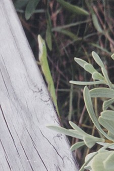

Pictures of Florida's Wild Animals
Pictures of Florida's Wild Animals
|
Green Anole The Green Anole is the very rare cousin to the ubiquitous Brown Anole. These lizards at one time lived all throughout Florida. However, they have been outcompeted by the stronger, faster Brown Anole, and there are relatively few left. They move much slower than their brown counterparts, depending more on camouflage, and a limited color change than on speed. They are much calmer, and seem to me to be more intelligent and friendly, also. Rather than scurrying at the approach of a human, they often will study the onlooker. Unfortunately, perhaps this helps explain their dwindling.  |
Commonality list This is my list of the likelihood of seeing various creatures based on my experiences. Of course, you have to be in the right habitat, the odds of seeing a Dolphin in the forest are not very good. Also, these are based a lot on my local area of Hillsborough County (Tampa). A hyperlink means some kind of info and probably some photos are available. Common If you are in the appropriate habitat, you should run into one of these. In many cases, you can't avoid them.
Uncommon These are harder to find. You'll have to spend some time outdoors and probably look a little for these. However, odds are you'll find one after a little effort.
Rare Difficult to find. Usually, it's just luck to find one, or you'll have to look very hard. You'll probably only see one every six months.
Ultra Rare Very difficult to find. Most people, even people who spend a fair amount of time outdoors, like me, never see one. Consider yourself truely priviledged if you do catch a glimpse of one in the wild.
|